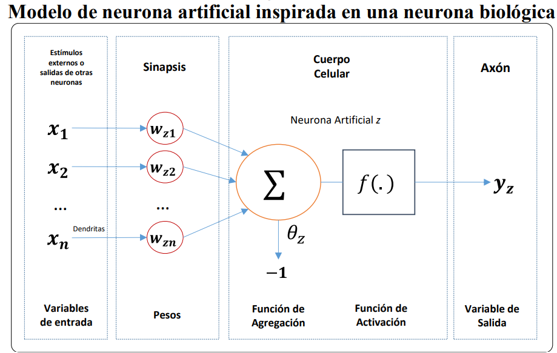

1 Modelos Credit Scoring
Los modelos credit Scoring son algoritmos o métodos que pueden ayudar a obtener la probabilidad de incumplimiento de un solicitante de crédito, permitiendo evaluar el riesgo en el origen de la financiación (Gutierrez Girault 2007).
El objetivo principal de estos modelos es estimar la probabilidad de incumplimiento de un solicitante de crédito; para esto es necesario contar con una variable que identifique si el solicitante es un buen o mal cliente, esta variable será represantada con la letra \(\textbf{Y}\), que es la variable dependiente del modelo.
La variable dependiente es una variable dicotómica (binaria) que toma los siguientes valores:
\[ Y = \left \{ \begin{array}{rr} 1 &: \mbox{Si el solicitante de crédito es definido como un buen cliente}\\ 0 &: \mbox{Si el solicitante de crédito es definido como un mal cliente}\\ \end{array} \right. \hspace{1.5cm} (1) \]
La definición para la variable dependiente \(\textbf{Y}\), es construida a partir de información demográfica, comportamiento en el buró y/o dentro de la institución.
Los modelos buscan estimar la probabilidad que la variable dependiente \(\textbf{Y}\) tome el valor de 0 o 1, a partir de un conjunto de variables denominadas independientes, las cuales serán representadas con la letra \(\textbf{X}\), que puede ser cualitativas o cuantitativas. Las variables independientes son obtenidas a partir de diversas fuentes de información crediticia, buró, demográfica, etc. Muchas de las cuales dependerán de las características del crédito que se esté considerando.
1.1 Modelo de Regresión Logística - Logit
Los modelos logit pertenecen al grupo jde modelos de regresión con respuesta cualitativa, en este caso binaria; mientras que las variables independientes pueden ser cualitativas o cuantitativas, o una mezcla de ambas (Flórez 2002).
El modelo está basado en una función de distribución logística, cuya estructura se presenta a continuación:
\[ P(Y = 1 | X) = F(\textbf{Z}) = \frac{e^{\textbf{Z}}}{1 + e^{\textbf{Z}}}, \hspace{1cm} -\infty < z <\infty,\hspace{1cm} (2) \]
con \(z = \textbf{X}^T\beta = \beta_0 + \beta_1x_1 + . . . + \beta_nx_n\).

donde:
$ $ Es la variable dependiente, binaria, que no puede tomar dos posibles valores, que se etiquetarán con 0 (cliente malo) y 1 (cliente bueno).
\(\textbf{X:}\) Es el conjunto de \(n\) variables independientes \((x_1, x_2, . . . , x_n)\) relacionadas con la información propia del solicitante, tomadas con el fin de explicar y/o predecir el valor de \(\textbf{Y}\).
\(F(\textbf{Z}):\) Es la función de probabilidad, que depende de un vector de parámetros \(\beta = (\beta_0, \beta_1, . . . , \beta_n)\), que permitirán relacionar las variables independientes \(\textbf{X}\), con la dependiente \(\textbf{Y}\). Esta función tiene un rango entre \([0,1]\) y se conoce como función de distribución logística.
El objetivo del modelo es encontrar los coeficientes \(\beta\) que mejor se ajustan a la expresión \(P(Y = 1|X)\).
1.1.1 Estimación de los parámetros del modelo logit
La estimación de los coeficientes \(\beta\) puede realizarse a partir del método de máxima verosimilitud (Gujarati 2005).
Supóngase que se cuenta con un conjunto de \(k\) individuos; de tal forma que, catalogarles como buenos o malos clientes será definido por la variable \(Y_i\), considerando \(i = 1, . . . , k\).
En vista que cada \(Y_i\) es una variable aleatoria de Bernoulli, por tomar dos valores, 0 o 1, podemos expresar la probabilidad que suceda uno u otro evento, como sigue:
\[ \begin{eqnarray} P(Y_i = 1) &=& P_i\\[0.2cm] P(Y_i = 0) &=& 1 - P_i \end{eqnarray} \]
su función de probabilidad será:
\[ f_i(Y_i) = P_i^{Y_i}\times (1 - P_i)^{1-Y_i}, \hspace{1cm} i = 1, . . . , k\hspace{1cm} (3) \]
Es decir, la función \(f_i(Y_i)\) denota la probabilidad de \(Y_i = 0~ o~ 1\).
Como cada observación es independiente, la probabilidad conjunta de observar los \(k\) valores de la variable \(Y\), se expresa como:
\[ f(Y_1, Y_2, . . . , Y_k) = \prod_{i=1}^{k} f_i(Y_i) = \prod_{i=1}^{k} P_i^{Y_i} \times (1- P_i)^{1-Y_i}\hspace{1cm}(4)\]
A está probabilidad conjunta se le conoce como función de verosimilitud. Al tomar el logaritmo de está función se tiene:
\[ \begin{eqnarray} \ln(f(Y_1, Y_2, . . . , Y_k)) &=& \left[Y_i\ln P_i + (1 - P_i)\ln(1 - P_i)\right]\\[0.2cm] &=& \sum_{i=1}^{k} \left[Y_i\ln P_i - Y_i\ln(1-P_i) + \ln(1 - P_i)\right]\\[0.2cm] &=& \sum_{i=1}^{k} \left[Y_i\ln\left(\frac{P_i}{1 - P_i}\right)\right] + \sum_{i=1}^{k}\ln(1 - P_i)\hspace{1.5cm} (5) \end{eqnarray} \]
Tal como se expuso en ecuación \((2)\), la probabilidad de que un individuo sea un buen o mal cliente es representado por:
\[ P_i = \frac{e^{X_i^T\beta}}{1 + e^{X_i^T\beta}} \hspace{1cm} (6) \]
De aquí se puede, facilmente, demostrar que:
\[ 1 - P_i = \frac{1}{1 + e^{X_i^T\beta}}\hspace{1cm}(7) \]
De igual forma,
\[ \ln\left(\frac{P_i}{1-P_i}\right) = X_i^T\beta\hspace{1cm} (8) \]
Considerando \((7)\) y \((8)\) en \((5)\) , se puede expresar el logaritmo de la función de verosimilitud, como sigue
\[ \ln\left(f(Y_1, . . . , Y_k)\right) = \sum_{i=1}^{k}Y_i(X_i^T\beta) - \sum_{i=1}^{k}\ln\left(1 + e^{X_i^T\beta}\right)\hspace{1cm} (9) \]
Podemos observar que \((9)\) es una función que depende de los coeficientes \(\beta\), pues \(Y_i\) y \(X_i\) se conocen.
El método de máxima verosimilitud consiste en maximizar la expresión \((9)\), para buscar la máxima capacidad predictiva. Para esto se deriva parcialmente, respecto a cada una de las incógnitas; es decir, respecto a cada \(\beta_j\), con \(j = 1, . . . , n\). Obteniendo un sistema de \(n\) ecuaciones no lineales, que deberán resolverse por procedimientos numéricos.
Una vez obtenidos los \(\beta\) se verifica que en verdad maximicen la función de verosimilitud a partir de la condición de maximización de segundo orden. Luego de este proceso, se obtiene los coeficientes, necesarios para estimar la probabilidad de incumplimiento de un individuo, a partir de la ecuación \((2)\).
1.1.2 Interpretación coeficientes de una regresión logística
Una de las razones, por las cuales se utiliza con mayor frecuencia un modelo de regresión logística es que su interpretación es relativamente sencilla. Para apreciar este beneficio, es de ayuda entender el significado de odds. Tal como lo expresa (Allison 2012) muchas personas consideran a una probabilidad como la forma natural de cuantificar que un evento ocurra, considerando valores que se mueven entre 0 y 1. Sin embargo, existen otras formas de representar un cambio natural en algún evento, esto son los odds ratios.
El mismo autor, define los odds, como la relación entre el número esperado de veces que un evento ocurra y el número esperado de veces que este no ocurra. De esta forma, la relación entre el odds y la probabilidad es:
\[ Odds = \frac{probabilidad~que~un~evento~ocurra}{1 - Probabilidad~que~un~evento~ocurra} \]
Esta expresión tiene relevancia en un modelo de regresión logística, pues si se considera \((6)\) y \((7)\) se tienen,
\[ \frac{P_i}{1- P_i} = \frac{\frac{e^{X_i^T\beta}}{1 + e^{X_i^T\beta}}}{\frac{1}{1 + e^{X_i^T\beta}}} = e^{X_i^T\beta}\hspace{1cm} (10) \]
A esta expresión se la considera como transformación logit de la probabilidad \(P_i\), cuya parte izquierda es una razón de probabilidades u odds (Flórez 2002). Al considerar el logaritmo natural en \((10)\) se obtiene el logaritmo de la razón de proabilidades conocido como logit y es por este término que al modelo de regresión logística se lo conoce, también, como modelo logit. Así, se llega a la ecuación \((8)\).
\[ L = \ln\left(\frac{P_i}{1 - P_i}\right) = X_i^T\beta = \beta_0 + \beta_1x_1 + . . . + \beta_nx_n\hspace{1cm}(11) \]
De esta forma, la interpretación del modelo está dada por la expresión logit (L); por ejemplo, \(\beta_2\) mide el cambio en \(L\) ocasionado por un cambio unitario en \(x_2\), suponiendo constante el resto de variables explicativas (Gujarati 2005).
La interpretación del modelo también puede darse a partir del odds ratio, la cual es una medida de la magnitud de asociación entre dos variables; en este caso, cada una de las independientes con la dependiente. Un odds ratio mayor a 1, muestra que existe una relación positiva o directa entre las dos variables, mientras que un odds ratio menor a 1, establece una relación negativa o inversa. Cuando el odds ratio es igual a 1, significa que no existe una relación entre las mismas (Velasco 1996).
El odds ratio puede calcularse a partir de la estimación de los parámetros del modelo
\[ odds~ratio = e^\beta\hspace{6cm}(12) \]
1.2 Modelo de Redes Neuronales
Las redes neuronales artificiales (RNA) son modelos matemáticos computacionales que intentan imitar el funcionamiento del cerebro de la forma como este procesa la información. Se cataloga dentro de las técnicas no paramétricas de credit scoring, como sistemas con la capacidad de aprender a través de entrenamiento, también conocido como la interpretación que ellas hacen de la información que reciben (BAHAMÓN 2013).
1.2.1 Modelo Biológico
La figura muestra un tipo común de neurona biológica, que está compuesta principalmente por:
Un cuerpo central, que contiene el núcleo celular, denominado Soma.
La conexión entre neuoronas se establece a partir de una prolongación del Soma, llamada Axón, que también se ramifica en su extremo final para establecer conexión con ontras neuronas, estas ramificaciones son conocidas como terminales axónicos.
Las dendritas que son ramificaciones del cuerpo central, con las cuales se logra la conexión sináptica.
Se estima que alrededor de cien mil millones de neuronas son las que conforman el sistema nervioso; estas se diferencian del resto de células vivas en el hecho que poseen capacidad de comunicarse.
En general, las dendritas y el Soma reciben las señales de entrada, el cuerpo celular las combina y emite señales de salida; a continuación, el Axón transmite esta señal a sus terminales, que se encargan de distribuir la información a otro conjunto de neuronas (Brío 2002).
Un aspecto muy importante en el proceso e comunicación entre neuronas es el término conocido como sinapsis. Brio y Molina (2002) lo definen como la unión entre dos neuronas, en el proceso de generación y transmisión de la señal nerviosa.
1.2.2 Elementos de una red neuronal artificial
Para introducir los elementos de una red neuronal artificial, se hará uso de la siguiente figura, que cuenta con una sola neurona; es decir, una pequeña parte de un sistema de red neuronal artificial. Además, se puede evidenciar que esta tiene una forma similar a la neurona biológica de la figura anterior.

Se puede observar en esta figura que se tiene un elemento central, llamado neurona artificial la cual recibe información del exterior o de otras neuronas. Las dendritas son la estructura a través de la cual la neurona artificial recibe información, que luego es procesada de acuerdo con la intensidad asignada al nexo entre la unión de las entradas y las neuronas; este nexo se denomina sinapsis y a la intensidad descrita se le conoce como peso sináptico \((\textbf{W})\).
Las redes neuronales intentan reproducir el comportamiento del cerebro, por lo cual, cualquier modelo de red neuronal consta de dispositivos elementales de proceso, denominados neuronas.
Los elementos que constituyen a una neurona \(z\) son los siguientes:
Conjunto de entradas \(x_i(t)\), \(i = 1, . . . , n\): las cuales pueden ser binarias o continuas, dependiendo del tipo de modelo y aplicación.
Pesos sinápticos de la nuerona \(z\): catalogados como \(w_{zi}\), que representa la intensidad de interacción entre la entrada \(i\) y la neurona \(z\). Dependiendo de los pesos, se puede obtener la salida necesaria, considerando entradas específicas. Cuanto más grande sea el peso, más fuerte y relevante será el nodo de entrada.
Función de agregación también llamada regla de propagación: Se denomina función de agregación a aquella regla que relaciona las entradas y los pesos para obtener el valor de la señal postsináptica \(h_z\), conocido como potencial postsináptico: \[h_z(t) = \sigma_z(w_{zi},x_i(t))\]
La función más habitual es lineal y consiste en la suma ponderada de las entradas con los pesos signápticos, \[h_z(t) = \sum_{i=1}^n w_{zi}x_i \]
Dada una entrada positiva, si el peso también es positivo, entonces este tenderá a excitar a la neurona, si el peso es negativo, tenderá a inhibirla (Brío 2002).Función de activación: La misma proporciona el estado de activación, en el tiempo \(t\), \(a_z(t)\), a partir del potencial postsináptico \(h_z(t)\) y del estado de activación anterior \(a_z(t-1)\). \[a_z(t) = f_z(a_z(t-1), h_z(t))\]
Sin embargo muchos modelos de redes neuronales consideran que el estado actual de la neurona (tiempo \(t\)) no depende de su estado anterior (Brío 2002), por lo cual \[a_z(t) = f_z(h_z(t))\]
En general se puede establecer dos estados posibles, reposo y excitado, a los cuales se les asigna un valor que puede ser continuo o discreto (González 2000).
En la mayor parte de modelos la función de activación \(f(\cdot)\) es monótona creciente y continua. En el siguiente cuadro, se exponen las funciones de activación más usuales, en donde: \(\textbf{x}\) representa el potencial postsináptico y el estado de activación.
| Función | Rango | |
|---|---|---|
| Identidad | \[ y = x \] | \[ [-\infty, +\infty] \] |
| Escalón | \[ y = sign(x) \] \[ y = H(x) \] |
\[ {-1, +1} \] \[
{0, +1}
\] |
| Sigmoidea | \[ y = \frac{1}{1 + e^-x} \] \[ y = tgh(x) \] |
\[ [0, +1] \] \[ [-1, +1] \] |
| Gaussiana | \[ y = Ae^{-Bx^2} \] | \[ [0, +1] \] |
| Sinusoidal | \[ y = Asin(\omega x + \phi) \] | \[ [-1, +1] \] |
Muchas veces se adiciona al grupo de pesos, un parámetro adicional \(\theta_z\), el cual se resta del potencial postsináptico, y representa características propias de la neurona, de tal forma que no es igual en todas ellas.
Por ejemplo, en el caso de neuronas todo-nada, el parámetro representa el nivel mínimo que debe lograr el potencial postsináptico para que la neurona se active. De tal forma, el argumento de la función de activación se expresa de la siguiente forma \[\sum_{i=1}^n w_{zi}x_i - \theta_z\]
- Función de salida: Es la función que proporciona la salida de la neurona \(y_z(t)\), que depende del estado de activación \(a_z(t)\). Por lo general la función de salida es la identidad \((F(x) = x)\) por lo cual la salida es considerada con el estado de activación de la neurona \[y_z(t) = F_z(a_z(t)) = a_z(t)\] Finalmente, el modelo neuronal que (Brío 2002) denomina como estándar queda como se muestra a continuación \[y_z(t) = f_z(\sum_{i=1}^n w_{zi}x_i - \theta_z) = f_z(\sum_{i=0}^n w_{zi}x_i)\] con \(w_{z0} = \theta_z\) y \(x_0 = -1\).
1.2.3 Arquitectura de las redes neuronales
En la sección previa se mostroó los principales componentes de una red neuronal. A continuación, se expone las características de cada nodo de la red, así como la organización de esta.
Generalmente, se puede encontrar tres tipos de neuronas:
Las que toman la información de entrada, de las fuentes externas de la red.
Las que procesan la información y generan cualquier tipo de representación interna de la misma. A estos se los denomina unidades ocultas pues no tienen relación directa con la información de entrada o de salida.
Cuando ya se tiene procesada la información, esta pasa a los nodos de salida, los cuales dan una respuesta al sistema.
La distribución de estas neuronas está dada formando niveles o capas de un número determinado de neuronas cada una. Así, se puede determinar tres tipos de capas: de entrada, ocultas y de salida, conformadas por los tipos de neuronas ya descritas.
El número de capas ocultas puede estar entre cero 1 un número elevado y pueden estar interconectadas de diversas formas, estos dos aspectos determinan las distintas tipologías de redes neuronales.
Otro aspecto importante en la arquitectura de una red neuronal es la forma en la que se realizan las conexiones entre las neuronas, es decir, la forma en la que las salidas de las nueronas están encaminadas para convertirse en las entradas de otras neuronas. Incluso se puede dar que la salida de un nodo sea la entrada de sí misma, llamandose a este tipo de conexión como auto recurrente.
(González 2000) mencionan dos tipos de conexiones, propagación hacia atrás que es cuando las salidas de los nodos pueden conectarse con capas previas o del mismo nivel, incluso con si mismos. Y propagación hacia adelante, cuando la salida de los nodos se conecta únicamente con nodos de capas posteriores.
Es así, que la arquitectura de las redes neuronales se basa en la forma en que se organizan y disponen las neuronas formando capas más o menos alejadas de la entrada y salida de la red, tal como se muestra en la figura.
En general, no se cuenta con una regla que determine el número óptimo de neuronas ocultas que ayudan a resolver un problema; sino más bien, es a base de prueba y error, realizando cambios en el que se asume o reste el número de neuronas ocultas hasta alcanzar la estructura que mejor se ajuste a la solución de un problema dado (Tudela 2011).
Se suele distinguir entre redes con una sola capa o un solo nivel de neuronas denominadas como redes monocapa y, con múltiples capas. Es así que, los principales parámetros de una red neuronal serían el número de capas, el número de neuronas en cada capa, el grado de conectividad y el tipo de conexión entre cada neurona (Carranza Bravo 2010).
1.2.4 Modos de operación de una red neuronal
Se considera dos tipos de operación en un sistema neuronal: el modo recuerdo o ejecución y el modo aprendizaje.
1.2.4.1 Fase de aprendizaje
Se tiene un especial interés en esta fase pues una de las principales características de una red neuronal es que son sistemas entrenables, es decir, son capaces de llevar a cabo un específico procesamiento aprendiendo de un grupo de patrones de aprendizaje o ejemplos.
Puede definirse al aprendizaje como el proceso en el cual se modifica los pesos de la neurona en respuesta a la información de entrada. Tal como expresa (González 2000) en el proceso de aprendizaje se destruye, modifica y crea conexiones entre las neuronas; que una conexión se destruya signifca que su peso pasa a tener el valor de cero y que se cree significa que toma un valor diferente de cero.
Como ya se mencionó, en el proceso de aprendizaje se modifican los pesos de las conexiones. Por lo cual, se puede establecer que la red neuronal ha terminado su fase de aprendizaje una vez que los pesos logren estabilidad en el tiempo. Generalmente, su modifica los pesos sinápticos siguiendo cierta regla de aprendizaje, que es construida a partir de una función de error. Este proceso es iterativo, es decir, los pesos van actualizándose una y otra vez hasta que la red neuronal logra un rendimiento deseado (Brío 2002).
Es importante conocer las reglas de aprendizaje de la red; que son los criterios para cambiar los pesos de las conexiones, con el objetivo que esta aprenda. Se considera dos tipos de reglas, aprendizaje supervizado y no supervizado, cuya diferencia principal radica en la existencia o no de un agente externo que controle el proceso.
Redes neuronales con aprendizajes supervisado: En este tipo de aprendizaje se tiene la participación de un agente externo o supervisor que establece la respuesta que debería tener la red a partir de una entrada específica. Este supervisor comprueba la salida de la red y si no se da la coincidencia con la deseada, se modifica los pesos de las conexiones, hasta que la salida se aproxime al valor requerido (González 2000).
Redes neuronales con aprendizaje no supervizado: Este tipo de aprendizaje no requiere de un agente externo para ajustar los pesos de las conexiones, la red no recibe informacipon que le indique la salida deseada en función de una determinada entrada. Esto significa que no conoce si la salidad de la neurona es correcta o no, se dice que estas redes son capaces de autoorganizarse (González 2000).
Un criterio a tener en cuenta en las reglas de aprendizaje es lo que se conoce como aprendizaje on line y off line. (González 2000) establecen que en el aprendizaje on line los pesos varían dinámicamente siempre que se ingrese nueva información al sistema; mientras que, en el aprendizaje off line, una vez que la red a aprendido, los pesos se mantienen fijos.
1.2.4.2 Fase de Recuerdo
Por lo general, una vez que la red a concluido su fase de aprendizaje esta se “apaga o desconecta”; es decir, pasa a un estado off line, por lo cual, los pesos, conexiones y estructura de la red se mantiene fijos y esta puede procesar nueva información.
1.2.5 Clasificación de los modelos neuronales
Por lo expresado hasta el momento se puede deducir que dependiendo del modelo de neurona que se utilice, su arquitectura, tipo de conexión, y algoritmo de aprendizaje se obtendrá distintos modelos de redes neuronales.
En la figura 6 se expone, a modo de resumen, la clasificación de las redes neuronales por tipo de aprendizaje y arquitectura ya expuestas anteriormente.
En el caso de un Credit Scoring, los nodos de entrada representan las variables independientes \(X\), que son las características propias del solicitante de crédito. La respuesta de la neurona producirá una salida que representa la variable dependiente \(Y\), descrita anteriormente (Jiménez-Caballero 2000).
El método que se utilizará para encontrar los pesos de la red neuronal, del presente proyecto, es el algoritmo RPROP+ (resilient backpropagation with weight backtracking).
Tal como lo expresa (Riedmiller 1993) el algoritmo Backpropagation es el más extensamente usado para aprendizaje supervisado y redes neuronales multicapa. Desafortunadamente este puede ser muy lento para aplicaciones prácticas (Schiffmann 1994). Para superar esta dificultad se propone diversas variantes a este método como el método RPROP+, el cual es usado en este trabajo. Tanto el algoritmo Backpropagation como su variante RPROP+, son descritos a continuación.
1.2.6 Algoritmo Backpropagation
El algoritmo de backpropagation es el más ampliamente usado para modelos con aprendizaje supervizado multicapa. La idea básica de este algoritmo es la siguiente:
En un espacio de \(N+1\) dimensiones, donde \(N\) es el número de pesos de la red, se representa una superficie que muestre el error que se genera en la red neuronal, para un determinado valor en los pesos de esta.
El algoritmo backpropagation hace que se vaya bajando por la superficie del error hasta lograr un mínimo, es por esta razón que la variación de un peso \(w_{ij}\) de la red, en una iteración, al procesar un conjunto de patrones \(p_i\), es proporcional al gradiente descendente (González 2000).
\[ \triangle w_{ji} = -\alpha \frac{\partial E_{p}}{\partial w_{ji}} \]
Considerando a E la función de error, se tiene que:
\[ \frac{\partial E_p}{\partial w_{ji}} = \frac{\partial E_p}{\partial y_{pj}}\times \frac{\partial y_{pj}}{\partial Net_{j}}\times \frac{\partial Net_{j}}{\partial w_{ji}} \]
Donde \(w_{ji}\) representa el peso de la neurona \(j\) a la reunión \(i\), \(y_{pj}\) es la salida de la neurona \(j\) en el patrón \(p\), y \(Net_j\) es la suma ponderada de las entradas a la neurona \(j\), es decir:
\[ Net_j = \sum_{i=1}^k w_{ji}\times y_i \]
\[ y_{pj} = f(Net_j) \]
Siendo \(k\), en número de entradas de la neurona \(j\) y \(f\) la función de activación, derivable.
Es así, que la actualización de los pesos está dada por la siguiente ecuación:
\[ w_{ji}(t+1) = w_{ji}(t) - \alpha \frac{\partial E_p}{\partial w_{ji}}(t+1) \]
Es evidente que la elección de \(\alpha\) tiene un efecto importante en el tiempo de convergencia del algoritmo, el cual se detiene cuando el error resulte aceptablemente pequeño para cada uno de los patrones aprendido.
1.2.7 Algoritmo RPROP+
Una alternativa al algoritmo de backpropagation es el resiliente backpropagation (RPROP+) en el que, en lugar de usar la magnitud de la derivada \(\frac{\partial E_p}{\partial w_{ji}}\), presente en la ecuación \(\triangle w_{ji}\), se considera únicamente su signo multiplicado por una constante. Este algoritmo tiene la ventaja de ser uno de los algoritmos de aprendizaje más rápidos (Almeida 2009).
El algoritmo RPROP+ consiste en los siguiente (Igel 2000): Para cada peso se introduce su valor de actualización \(\triangle_{ji}\), que determina el tamaño de la actualización del peso.
\[ \left\{\begin{array}{cc}\eta^+ \times \Delta_{ji}^{t-1}, & si ~ \frac{\partial E_p^{(t-1)}}{\partial w_{ji}} \times \frac{\partial E_{p}^{(t)}}{\partial w_{ij}} > 0\\\eta^- \times \Delta_{ij}^{t-1}, & si~ \frac{\partial E_{p}^{(t-1)}}{\partial w_{ij}} \times \frac{\partial E_{p}^{(t)}}{\partial w_{ij}} < 0 \\\Delta_{ji}^{t-1}, & caso~contrario\end{array}\right. \]Donde \(0 < \eta^- < 1< \eta^+\). \(\Delta_{ji}\) están acotados por dos parámetros \(\Delta_{\min}\) y \(\Delta_{\max}\). Una vez obtenidos los tamaños de actualización es necesario el valor de variación de los pesos \(\Delta w_{ji}\), distinguiendo dos casos.
Si el signo de la derivada parcial no ha cambiado se tiene:
\[ Si ~ \frac{\partial E_{p}^{(t-1)}}{\partial w_{ji}} \times \frac{\partial E_{p^{(t)}}}{\partial w_{ji}} ≥ 0 ~ entonces ~ \Delta w_{ji}^t = -sign\left(\begin{array}{c}\frac{\partial E_{p}^{(t)}}{\partial w_{ji}}\end{array}\right) \times \Delta_{ji}^t \]
Donde el operador signo retorna +1 si el argumento es positivo, -1 si es negativo y 0 en otro caso. En caso de que el signo de la derivada parcial cambia, se tiene:
\[ Si ~ \frac{\partial E_{p}^{(t-1)}}{\partial w_{ji}} \times \frac{\partial E_{p}^{(t)}}{\partial w_{ji}} < 0 ~ entonces ~ \Delta w_{ji}^t = - \Delta w_{ji}^{t-1} ~ y ~ \frac{\partial E_{p}^{(t)}}{\partial w_{ji}} = 0 \]
Finalmente se actualiza los nuevos pesos, los cuales están dados por,
\[ w_{ji}(t+1) ) w_{ji}(t) + \Delta w_{ji}(t) \]La función de error que será usada para optimizar los pesos es la suma de los errores cuadráticos definida de la siguiente forma Ladino (2014) :
\[ E = \frac{1}{2}\sum_{i=1}^n (y_i - \hat{y_i})^2 \]
Donde \(n\) es el número de datos en entrenamiento, observaciones, \(y_i\) es la salida deseada y \(\hat{y_i}\) es la salida de la red.